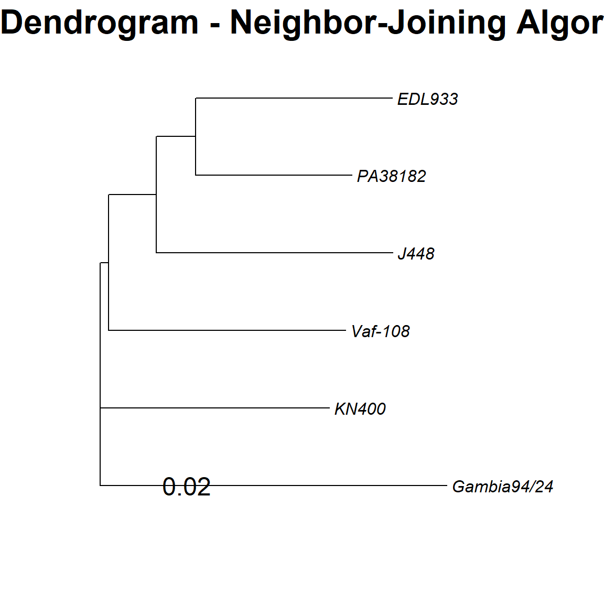
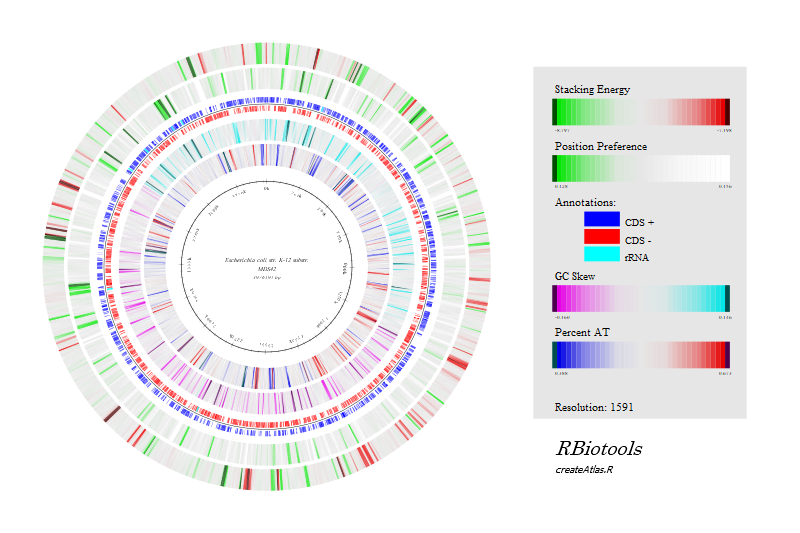
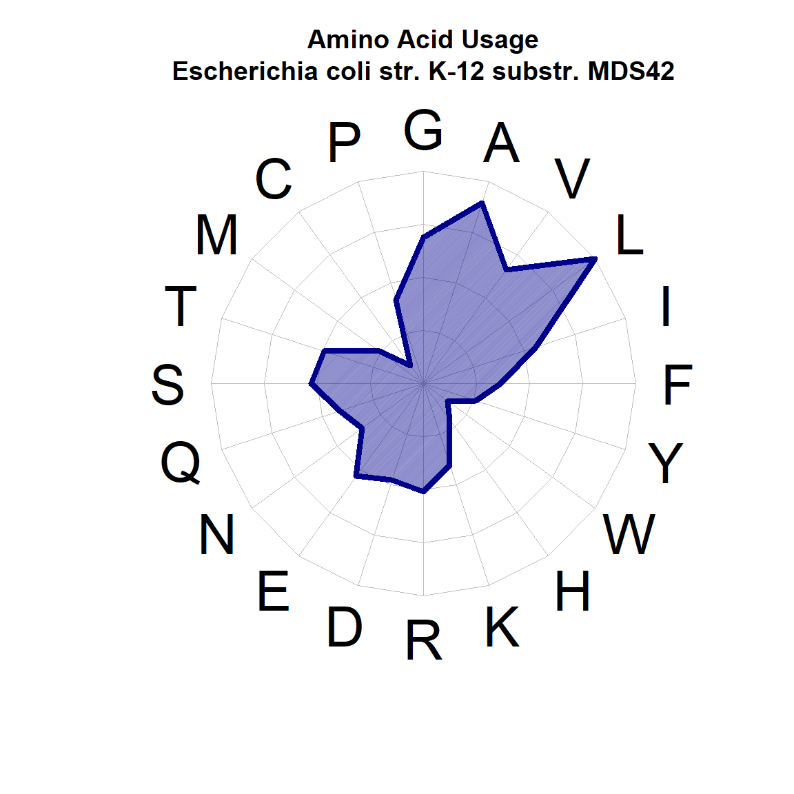
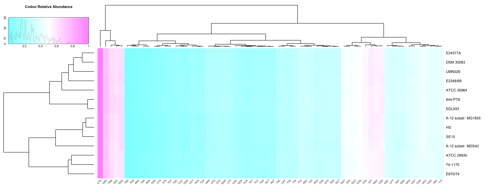

Intro to RBioTools
RBiotools is a package for COMPARATIVE MICROBIAL GENOMICS. RBiotools works best in the RStudio integrated development environment. RBiotools works with IDs from GenBank, the NIH genetic sequence data base, to perform analyses and create figures.
1 Install R, R Studio, and other setup
To get started there are several installations that must be completed. These items are listed in the order in which they should be done.
Install R from here: https://www.r-project.org/
- Make sure that you install the correct version for your operating system.
Install R Studio from here: https://www.rstudio.com/
- Make sure that you install the correct version for your operating system.
Install requirements for compiling R packages
If Windows, Install Rtools4 https://cran.r-project.org/bin/windows/Rtools/rtools40.html
If Mac, Install Xcode Command Line Tools
i. Open a terminal window (Click Spotlight search in the top right of your screen, then search for “Terminal”)
ii. Copy and paste the following into the terminal
xcode-select --install, then press Enter. You may need to provide your password to enable installing the software.iii. Follow any onscreen instructions and wait for it to finish.
Designate a directory on your computer where you will store your work, this will be your Working Directory.
- Suggestion: Create a directory called BMIG5101 where you can store all of your class materials for the semester.
Download the RBioTools tar.gz from here: https://github.com/hanna-ford/dc3/blob/02c481ba7af3f9aae3b326df43230ec57c21a045/docs/RBiotools_0.5.3.tar.gz
- Save this tar.gz file in the root of your Working Directory
Download the
getting-started.Rscript from here: https://github.com/hanna-ford/dc3/blob/d5a4a7a22756779fadce123155b990183995e5b2/getting-started.R- When you click on the above link the code will open in browser window; right click in that window and select, “Save as…” (or “Save page as …”); make sure that the save as type is set to “Text Document”
- Save this R script in the root of your Working Directory
Check the version of R that is being used. These instructions were prepared using R version 4.1.2 (2021-11-01); older or newer versions may behave differently.
- You can check your version by running
sessionInfo()in your R Console.
- You can check your version by running
Make sure you are connected to the Internet
Open R Studio
- Go to File –> Open File –> Navigate to your working folder; and open “getting-started.R”
2 Install the required packages and RBiotools
- Install some basic dependencies that are required for
RBiotools
#Install some basic dependencies that are required for RBiotools
install.packages(c("rlang","ape", "data.table", "fmsb", "gplots", "ggplot2", "grImport", "gridExtra", "pheatmap", "RCurl", "rentrez", "seqinr"))
install.packages(c("lattice","mgcv","nlme","survival"))- Install
msaandBiostringspackage viaBiocManager(and installBiocManagerif it is not already installed)
#Install msa and Biostrings package via BiocManager (and install BiocManager if it is not already installed)
if (!requireNamespace("BiocManager", quietly = TRUE))
install.packages("BiocManager", repos ="http://cran.us.r-project.org")
BiocManager::install("msa", force = TRUE)
BiocManager::install("Biostrings", force = TRUE)- Install
installr- needed to compileRBiotoolsfrom tar.gz
#Install installr - needed to load RBiotools from tar.gz
install.packages("installr", repos ="http://cran.us.r-project.org")- Load the following libraries:
## this library call is required so the dendrogram will work
library(msa)
## this library call is required so we can install RBiotools from the zip source
library(installr) Set the Working Directory
Setting the working directory: In 1.1.4 of the previous section, Install R, R Studio, and other setup, you designated a folder on your computer as your Working Directory.
In this step we assign this as the working directory in R. Be sure to change the code below, as needed, so that the path is correct.
Note: For these instructions we have placed the BMIG5101 folder in our C:/Temp directory as demonstration. Please make sure you select a place that makes sense in your file structure.
setwd("C://Temp//BMIG5101//")## [1] "Folder exists already"Install the
RBiotoolspackageWe will install
RBioToolsfrom zip source. Note: you may need to update the file path depending on where you saved the tar.gz from Install R, R Studio, and other setup; step 5.
install.packages("RBiotools_0.5.3.tar.gz", repos = NULL, type = "source")- Load the
RBiotoolslibrary
library(RBiotools) 3 Identify the organisms
The first step is to choose a set of organisms that you would like to explore.
What is an organism?
- Organisms are specified with GenBank identifiers (aka. accession IDs) Genbank: https://www.ncbi.nlm.nih.gov/genbank/
- Organisms NOT in Genbank can be added with the RBiotools addGenome function
3.1 Create a list of organisms of interest
Let’s use a sample sets of organisms to get started.
- Create a list of E. coli organisms. This set will be stored using the name
eColi.
eColi <- c(
"AP012306", # Escherichia coli str. K-12 substr. MDS42 DNA 3.976 Mb - smallest chromosome
"KK583188", # Escherichia coli DSM 30083 = JCM 1649 = ATCC 11775 4.907 Mb - type strain scaffold
"U00096", # Escherichia coli str. K-12 substr. MG1655 4.642 Mb - first E. coli genome sequenced
"CP000802", # Escherichia coli HS 4.644 Mb - group A representative, commensal
"CP000800", # Escherichia coli E24377A 4.980 Mb - group B1 representative
"AP009378", # Escherichia coli SE15 4.717 Mb - group B2 representative, commensal
"FM180568", # Escherichia coli 0127:H6 E2348/69 4.966 Mb - group B2 representative, enteropathogenic
"CU928163", # Escherichia coli UMN026 5.202 Mb - group D representative
"CP008957", # Escherichia coli O157:H7 str. EDL933 5.547 Mp - group E representative
"CP027027", # Shigella dysenteriae strain E670/74 5.037 Mb - Shigella dysenteria representative
"CP026802", # Shigella sonnei strain ATCC 29930 4.975 Mb - Shigella sonnei representative
"CP026877", # Shigella boydii strain ATCC 35964 5.129 Mb - Shigella boydii representative
"CP026793", # Shigella flexneri strain 74-1170 4.734 Mb - Shigella flexneri representative
"CP015831" # Escherichia coli O157 strain 644-PT8 5.831 Mb - largest chromosome
)- Create a list of organisms from the Proteobacteria classes. This set will be stored using the name
proteobacteria.
proteobacteria <- c(
"CP018228", # Rhizobium leguminosarum strain Vaf-108 Phylum: Proteobacteria (alpha)
"CP017405", # Bordetella pertussis strain J448 Phylum: Proteobacteria (beta)
"CP008957", # Escherichia coli O157:H7 str. EDL933 Phylum: Proteobacteria (gamma)
"HG530068", # Pseudomonas aeruginosa PA38182 Phylum: Proteobacteria (gamma)
"CP002031", # Geobacter sulfurreducens KN400 Phylum: Proteobacteria (delta)
"CP002332" # Helicobacter pylori Gambia94/24 Phylum: Proteobacteria (epsilon)
)3.2 Verify list items by downloading genomic information from GenBank
Once you have a sample set of organisms in a list, use downloadGenBank() to create a data frame with the details of the organisms.
downloadGenBank(eColi)## Initializing RBiotools
## Initializing dependencies ...
## Downloading genome data for organism with accession ID: AP012306
## Downloading genome data for organism with accession ID: KK583188
## Downloading genome data for organism with accession ID: U00096
## Downloading genome data for organism with accession ID: CP000802
## Downloading genome data for organism with accession ID: CP000800
## Downloading genome data for organism with accession ID: AP009378
## Downloading genome data for organism with accession ID: FM180568
## Downloading genome data for organism with accession ID: CU928163
## Downloading genome data for organism with accession ID: CP008957
## Downloading genome data for organism with accession ID: CP027027
## Downloading genome data for organism with accession ID: CP026802
## Downloading genome data for organism with accession ID: CP026877
## Downloading genome data for organism with accession ID: CP026793
## Downloading genome data for organism with accession ID: CP015831The results will be stored in two separate data frames: orgData.df and orgName.df; both can be opened from the Environment pane.
Click on the data frame in the Environment pane to view the contents or type View(orgData.df) directly into the Console.
Follow the same steps to view the contents of the orgName.df data frame
If you have multiple lists, note that the results are not overwritten if you run this again but are appended to the same data frame.
downloadGenBank(proteobacteria)## Downloading genome data for organism with accession ID: CP018228
## Downloading genome data for organism with accession ID: CP017405
## Genome data for accession ID: CP008957 has already downloaded
## Downloading genome data for organism with accession ID: HG530068
## Downloading genome data for organism with accession ID: CP002031
## Downloading genome data for organism with accession ID: CP0023324 Explore functions that make plots and figures
4.1 Dendrograms
Plotting a dendrogram using 16S rRNA genes is pretty easy; however, may take several minutes to complete while data is accessed from GenBank. This will depend on how many items are in your list. Note that the proteobacteria list is shorter than the eColi list, so it completes more quickly.
#This first plot is for the eColi and Shigella organisms
dendrogram16S(eColi)## Calling type 'SSU' rRNA genes for genome with accession ID: AP012306
## Calling type 'SSU' rRNA genes for genome with accession ID: KK583188
## Calling type 'SSU' rRNA genes for genome with accession ID: U00096
## Calling type 'SSU' rRNA genes for genome with accession ID: CP000802
## Calling type 'SSU' rRNA genes for genome with accession ID: CP000800
## Calling type 'SSU' rRNA genes for genome with accession ID: AP009378
## Calling type 'SSU' rRNA genes for genome with accession ID: FM180568
## Calling type 'SSU' rRNA genes for genome with accession ID: CU928163
## Calling type 'SSU' rRNA genes for genome with accession ID: CP008957
## Calling type 'SSU' rRNA genes for genome with accession ID: CP027027
## Calling type 'SSU' rRNA genes for genome with accession ID: CP026802
## Calling type 'SSU' rRNA genes for genome with accession ID: CP026877
## Calling type 'SSU' rRNA genes for genome with accession ID: CP026793
## Calling type 'SSU' rRNA genes for genome with accession ID: CP015831
## Creating dendrogram for 14 16S rRNA sequences
## use default substitution matrix
#The second plot is for the proteobacteria organisms
dendrogram16S(proteobacteria)## Calling type 'SSU' rRNA genes for genome with accession ID: CP018228
## Calling type 'SSU' rRNA genes for genome with accession ID: CP017405
## Calling type 'SSU' rRNA genes for genome with accession ID: HG530068
## Calling type 'SSU' rRNA genes for genome with accession ID: CP002031
## Calling type 'SSU' rRNA genes for genome with accession ID: CP002332
## Creating dendrogram for 6 16S rRNA sequences
## use default substitution matrix
4.2 Genome Atlas
If you want to create a genome atlas for an organism already in a list, such as the ones we have already created (eColi and proteobacteria), then you can index into the list for that value.
createAtlas(eColi[1]) # here we index into the list to select the first item, AP012306.## Writing SVG code for genome with accession ID: AP012306
## Calling protein genes for accession ID: AP012306
## Calling type TSU rRNA genes for genome with accession ID: AP012306
## Calling type LSU rRNA genes for genome with accession ID: AP012306
Note: This graphic generated at this step will be a stored as an SVG file in your Working Directory. SVG files can be accessed by:
- Use your File Explorer (or equivalent) to navigate to your Working Directory
- Right-click on the file
- Hover over “Open with”
- Select a browser (Firefox, Google Chrome, etc…) to open the file.

Opening an SVG using a web browser.
If you want to create a genome atlas for an item not already stored in a list, you can set that “on-the-fly” by locating the accession ID of interest from GenBank and entering as we have below.
createAtlas("AP012306") # here we hard code the accession ID from GenBank to create a genome atlas for an item not already in a list.4.3 Amino Acid Usage Plot
The plotUsage function has many options. See the plotUsage documentation for more details and parameters.
plotUsage(eColi[1])## Plotting AA usage across 3621 proteins
4.4 Codon Heat Map
Heat Maps work best for groups of organisms that are NOT closely related (like our Proteobacteria group)
plotHeatMapCodon(proteobacteria)## Calling protein genes for accession ID: CP018228
## Calling protein genes for accession ID: CP017405
## Calling protein genes for accession ID: CP008957
## Calling protein genes for accession ID: HG530068
## Calling protein genes for accession ID: CP002031
## Calling protein genes for accession ID: CP002332
Note: This graphic generated at this step will be a stored as a PNG file in your Working Directory. This file can be accessed by:
- Go to the “Files” tab in RStudio (this tab will be in one of your IDE quadrants)
- Navigate to your Working Directory * hint: you may need to refresh your Working Directory for it to appear
- Click on the “HeatMapCodon.png” file

Opening the heat codon result from within RStudio.
4.5 Blast Matrix
Blast Matrices work best for groups of closely related organisms (like our eColi group)
Build a “homology matrix”, a table where:
each table row is a protein group
each table column is an organism
each table entry is the number of an organism’s proteins in a group
proteinGrouping <- runLinclust(eColi)## Calling protein genes for accession ID: KK583188
## Calling protein genes for accession ID: U00096
## Calling protein genes for accession ID: CP000802
## Calling protein genes for accession ID: CP000800
## Calling protein genes for accession ID: AP009378
## Calling protein genes for accession ID: FM180568
## Calling protein genes for accession ID: CU928163
## Calling protein genes for accession ID: CP027027
## Calling protein genes for accession ID: CP026802
## Calling protein genes for accession ID: CP026877
## Calling protein genes for accession ID: CP026793
## Calling protein genes for accession ID: CP015831
## Number of ungapped alignments: 112023
## Number of Smith-Waterman alignments: 2514- Use the homology matrix to plot the Blast Matrix
plotBlastMatrix(proteinGrouping)
Note: This graphic generated at this step will be a stored as an SVG file in your Working Directory. SVG files can be accessed by:
- Use your File Explorer (or equivalent) to navigate to your Working Directory
- Righ-click on the file
- Hover over “Open with”
- Select a browser (Firefox, Google Chrome, etc…) to open the file.